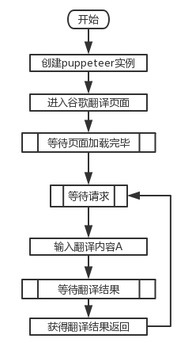
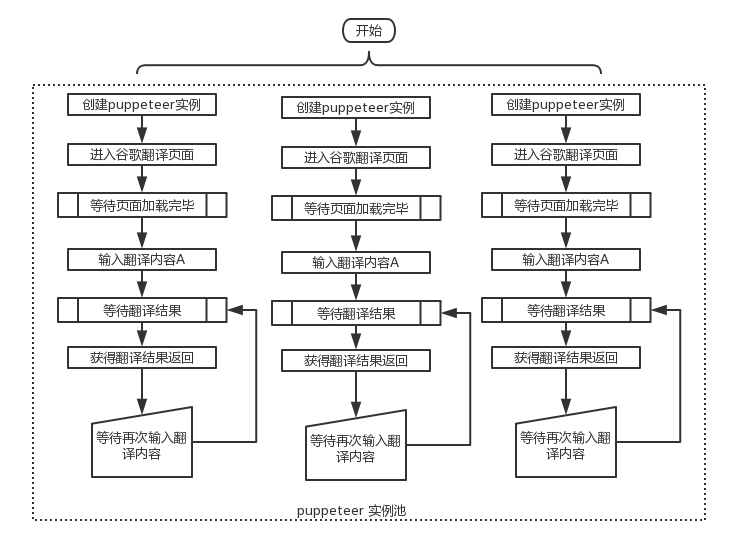
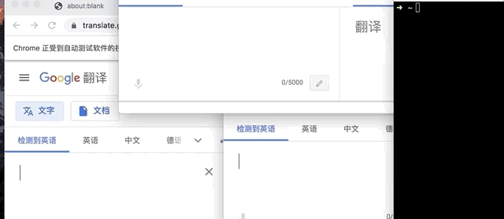

最近做个东西，需将各种语言翻译成中文，看了各家的翻译效果，还是谷歌的最好。
但谷歌的未提供免费接口，研究了谷歌的翻译页面，输入内容后会触发ajax请求，请求参数中除了输入内容，还有个加密参数tk，该加密算法在压缩的js代码中，我也在网上找到了网友摘出来的代码，js格式，一大段，压缩代码翻译起来很吃力，遂未翻译，而另辟蹊径，在生产环境的docker中打包了node环境，业务代码通过shell调用这段js，得到加密参数后再模拟请求，获得翻译结果，用着还挺好。
没过多久，发现失效了，请求返回403 Forbidden，禁止访问 🚫，估计加密参数算法又升级了。
接口翻译固然好用，但隔断时间就要重新搞一次加密算法，这个就有点儿难以接受了，每次都要从大量压缩js代码中找出加密算法，还不一定能完全找对。
至此，我们的主角无头浏览器puppeteer就要登场了，puppeteer一个node类库，提供了简洁的API，可以让使用者操作chrome浏览器，基本可以完全模拟人的操作，比如打开页面、输入网址、等待页面指定内容加载、点击按钮、甚至滑动也可以，有了这个工具模拟用户翻译然后获取结果完全没问题。
分析了谷歌翻译页面的元素，发现用户输入内容的时候会触发某些按钮变灰，等到翻译完成，按钮会再次变亮，这其实是通过添加去除*-disabled类来实现的，所以当我们模拟输入之后等待该类消失即可
await page.waitForSelector('selector-ele-disabled', {hidden: true});待元素变亮（去除了*-disabled类），就可以从结果输入框中获取到结果了。
但这样实现起来比较麻烦，也不够直接，还需要puppeteer调用chrome的js执行环境去获取，获取的也不是原始的接口返回数据。因此通过查阅文档找到了下面更好的方法👇。
前段时间研究了如何爬取手机app中的数据，里面用到了中间人代理攻击，中间人代理转发请求、返回，转发的时候就可以对请求进行拦截处理，我就想puppeteer应该也有，果然查到了event-response，他是Page实例的一个钩子，如果我们设置了"response": function callback(response){}，当chrome发出的任何一个请求返回的时候，都会触发他，并将类Response的一个实例传给回调函数，里面包含请求url、请求结果、请求结果状态等信息，这样我们就可以检测我们的翻译接口了
let browser = await puppeteer.launch()
let page = await browser.newPage()
page.on('response', async response => {
const url = response.url()
if (url.indexOf("检测的接口地址") != -1) {
let text = await response.text()
// text就是接口返回的结果，拿到接口原始数据，接下来就任你处理了
}
})大体流程如下图所示，初始化实例，等待请求，请求到达之后模拟输入，然后返回结果，再次进入等待请求状态。

此文的最终目的是可以为调用者提供一个简洁的接口，请求该接口返回，返回为中文的结果，接口的响应时间尽可能的短，可支持并发。
响应时间没多少可以优化的地方，主要依赖网络环境，以及谷歌的接口响应时间，我们只能做到当谷歌接口返回的时候我们也第一时间返回给调用者。
并发这里可以做优化，一个puppeteer同一时间只能处理一个翻译请求，如果做个实例池，维护多个puppeteer实例，这样就可以提升翻译接口的并发能力了。
如下图所示，虚线框内表示一个实例池，实例池中有多个puppeteer实例，他们之间互相独立，当请求来的时候，随机从池子中拿出一个实例，处理请求，等待请求处理完毕之后，再次将改实例放回池子中。
为了减少意外情况，池子中的每个实例处理100个翻译之后推出，重新启动一个新的额实例补充进来，池子中的实例总量保持不变，如果需要甚至可以搞成动态的，像php-fpm一样，请求多的时候动态增加实例池中的实例，空闲的时候，清理推出一些实例。

一个请求可以分为两个流程，一个请求流程，一个ajax成功回调流程，请求时候输入翻译原始内容，实例内部在请求谷歌ajax接口成功的时候调用预先注册好的回调函数，这两个流程没有办法直接联系起来，但他们都会接触到同一个实例，所以用这个实例将他们俩联系起来，ajax流程成功之后写入一个变量到实例对象上，请求流程中监测该实例上的变量，有数据说明请求成功，返回数据，清空该变量，原理可以看下面的简化代码
let obj = {}
setTimeout(() => {
obj.result = "this is async result"
}, 2000)
async function sleep(duration) {
return new Promise(resolve => {
setTimeout(() => {
resolve()
}, duration)
})
}
async function getRet() {
let times = 1
while(times <= 100) {
if (obj.result) {
return Promise.resolve(obj.result)
} else {
await sleep(200)
}
times++
}
}
(async () => {
let ret = await getRet()
console.log(ret)
console.log("now i can do something")
})()我将这个功能包装成了一个类库，上传到了npm，google-trans-api，顺便也熟悉了整个打包流程以及typescript的使用，不得不说typescript真是不错，可以防止很多误写的错误，还有自动提示的功能，用起来不要太爽。这里是源码地址aizuyan/google-trans-api。
linux、mac下面的Chromium是两个不同的包，如果网络可以翻墙，直接部署安装即可，否则需要手动下载，传送门，我的网络就不好，因此提前将两个版本的包放在项目根目录下的Chromium目录下，开发环境使用darwin目录下的包，生产环境使用linux下的包
.
├── Chromium
│ ├── darwin
│ └── linux配合下面的代码，可以自动根据环境选择使用的包路径，并传入实例的executablePath参数中
"use strict"
const path = require("path")
const os = require("os")
const platform = os.platform()
let ret = path.join(__dirname, "..", "Chromium", platform)
switch (platform) {
case "linux":
ret = path.join(ret, "chrome")
break
case "darwin":
ret = path.join(ret, "Chromium.app/Contents/MacOS/Chromium")
break
}
module.exports = ret如果网路不好，可能需要安装代理，可以使用shadowsocks，支持所有环境，默认没有代理，如果需要，可以在初始化的时候传入proxyServer: '--proxy-server=socks5://127.0.0.1:1080'参数。
const koa = require('koa')
const app = new koa()
const router = require('koa-router')();
const GoogleTrans = require('google-trans-api').default
// 调用的时候改为你自己的
const chromePath = '/path/to/puppeteer Chromium';
(async () => {
let instance = new GoogleTrans({
handles: false,
worker:3,
executablePath: chromePath,
initPageTimeout: 0,
//proxyServer: '--proxy-server=socks5://127.0.0.1:1080',
regExpIncludeUrl: url => {
const reg = new RegExp("translate.google.cn/translate_a/single.*?q=.*")
return reg.test(url)
},
responseCb: async response => {
const url = response.url()
console.log(url)
try {
const text = await response.text()
const status = response.status()
let ret = JSON.parse(text)
ret = ret[0]
let data = ""
for (let i = 0; i < ret.length; i++) {
if (ret[i][0]) {
data += ret[i][0]
}
}
return Promise.resolve(data)
} catch (err) {
console.error(`Failed getting data from: ${url}`)
console.error(err);
}
}
})
let flag = await instance.init()
router.get('/trans-auto', async ctx => {
try {
let msg = decodeURIComponent(ctx.query.msg)
let ret = await instance.trans(msg)
ctx.response.body = ret
} catch (e) {
console.log(`[error] when trans ${e.message}`)
ctx.response.body = ""
}
})
app
.use(router.routes())
.use(router.allowedMethods())
app.listen(3000, () => {
console.log('server is running at http://localhost:3000')
})
})()
下面是我打开GUI模式，看效果的图片
